説Anleitung
Everything hako does and how to use it, from the first plug-in to a factory reset. The booklet in the box covers the basics; this page has the rest. The knob menu's Help item opens it too: tap your phone on the top of hako, or scan the code on its screen.
hako- are your hako's own.hako-XXXX in your phone's Wi-Fi settings. On Android you can also just tap your phone on the top of hako. A setup page opens by itself: pick your home Wi-Fi and type its password. hako uses 2.4 GHz Wi-Fi; almost every home router has it.1077082455 and restart Anki. When Anki asks whether to allow your hako, click Erlauben. hako can read your decks and reviews, but never changes them.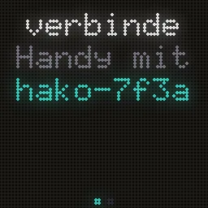
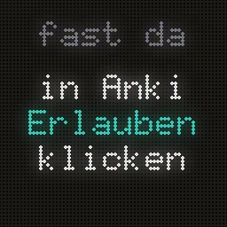
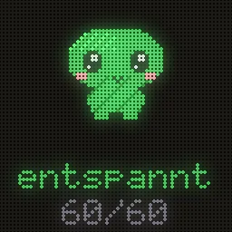
| Turn | Switch screens. In a menu, move through it. |
|---|---|
| Press | Refresh from Anki. In a menu, choose. |
| Double-press, or hold | Open the menu. In a game, a double-press pauses or leaves it. |
| Hold for 3 seconds | Sleep: the screen goes dark. Press or turn to wake it. |
| Pick up and shake | Switch screens, or surprise your pet. You can turn this off. |
| Hold while plugging in | Factory reset, after a 10-second countdown (see Factory reset). |
| Refresh | Fetch the latest from Anki now. |
|---|---|
| WiFi | Switch to another saved network in range, or start Setup for a new one. |
| Anki | Look for Anki on your network, or pick which computer to follow. |
| Bright | Screen brightness. |
| Cycle | Move through the screens by itself every few seconds. |
| Shake | Turn shake-to-switch on or off. |
| Rotate | Turn the picture 90° at a time, if hako stands on another side. |
| Flip knob | Reverse which way turning the knob scrolls. |
| Pet | Switch between the friends you've earned. |
| Games | Pong, Pegs, Liquid and Quiz (see Games). |
| Info | hako's address on your network, for the settings page. |
| Help | Opens this guide: tap your phone on top, or scan the code. |
| Website | hakoshop.com, the same way. |
| Today | Cards due today, about how long they'll take, and a bar that fills as you go. |
|---|---|
| Health | Your collection by state: mature, young, learning, new and suspended. |
| Heatmap | The last six weeks of study, one square a day, with your streak underneath. The color is yours to choose on the settings page. |
| Pet | Your study friend (see Pets). |
| Cards | Your recent cards, random ones, or cards with a tag you pick, with an optional reading underneath, like the kana for a kanji. |
| Retention | How many reviews you got right over the last day, week and month. |
| Clock | The time and the weather for your city. |
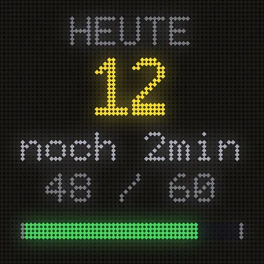
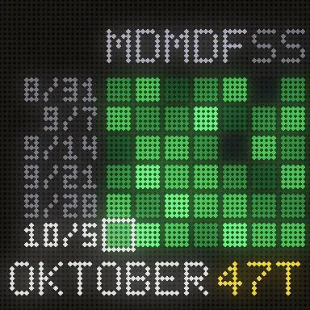
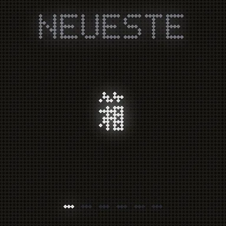
Hide the screens you don't want, and choose the cards, the reading field and the fonts, on the settings page.
Der kleine Punkt oben rechts zeigt, wie es um hakos Verbindung zu Anki steht.
| Grün | Verbunden: Anki hat auf die letzte Abfrage geantwortet. |
|---|---|
| Pulsierendes Türkis | Fragt gerade bei Anki nach. hako fragt alle 30 Sekunden. |
| Blinkendes Gelb | Anki antwortet seit über einer Minute nicht. hako versucht es weiter. |
| Orange | Seit 5 Minuten keine Antwort. Die Zahlen stammen von der letzten Synchronisierung. |
| Rot | hako hat Anki noch nicht erreicht. |
| Rosa Pixel ganz in der Ecke | Ein anderer hako ist in der Nähe. |
Every hako starts with one study friend. Others move in as you study:
| Chibi | From day one. |
|---|---|
| Mochi | A 7-day streak. |
| Onigiri | 1,000 reviews. |
| Kao | A 30-day streak. |
When a friend moves in, hako throws a little party and introduces them. Once they're in, they stay, even if a streak breaks. Switch pets with the knob menu's Pet item or on the settings page.
Pets react to your day: a bounce for each review, a cheer when you finish, a double take when a pile of cards comes due. They doze off at night. Give the box a shake while one is on screen. If another hako is on the same Wi-Fi nearby, a pink dot lights up in the corner and your pet perks up.
Open the menu, choose Games, then pick one. A double-press leaves Pong, Pegs and Quiz; in Liquid it opens the pause menu.
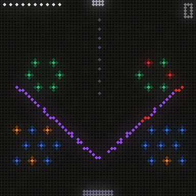
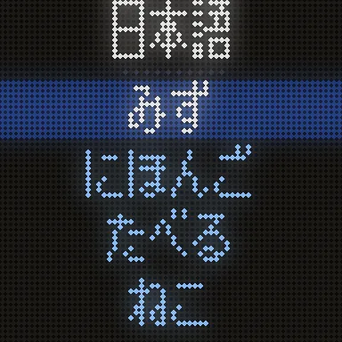
Turn the knob to move your paddle; press to start. First to the winning score takes it.
Turn to aim, press to drop a ball. It lights every peg it touches; clear all the orange pegs before your ten balls run out. Tougher pegs take two or three hits. Land a ball in the moving bucket, or light a lot of pegs in one shot, for a free ball. Clear a board and the next one is new.
Tilt hako and the water flows. Shake it to splash, turn the knob to fill or drain, and press to switch between water, lava and slime. A double-press opens its pause menu: Resume, Calibrate or Exit.
If the water flows the wrong way, choose Calibrate and follow the pictures: stand hako upright and press, lay it on its left side (the knob pointing up) and press, then lay it face down and press. A green tick means it's done; hako remembers it.
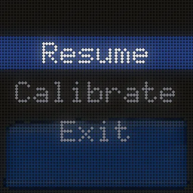
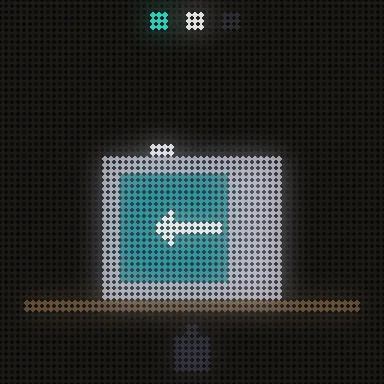
A card from your deck at the top, four readings underneath: turn to pick, press to answer. Quiz appears once hako knows a reading field for your cards (set it on the settings page under Cards) and has at least four different readings to choose from.
hako has its own settings page, on your phone or computer, while it's on the same Wi-Fi:
hako.local in a browser, orThe first time a browser opens it, hako shows a six-digit code on its screen: type it in. That browser stays paired; a phone tap pairs it by itself.
| Now | Today's numbers, your collection, a live view of the screen and connecting to Anki. |
|---|---|
| Settings | Which screens to show; the cards (recent, random or a tag), their field, the reading under them and the fonts; the heatmap color; your pet; your city for the weather and time zone, 12- or 24-hour time and units; the sleep schedule and dimming at night; brightness; shake to switch, hakos nearby, screen orientation and knob direction; switching screens by themselves; language. |
| Advanced | Anki's address if hako can't find it by itself, a debug summary and the factory reset. |
| Help | The knob in short, quick fixes, travel tips, the desktop app and an email button with your hako's details filled in. |
hako remembers every Wi-Fi it joins, and which computer Anki was on for each one, so coming home needs nothing.
Plug hako in. Away from your saved Wi-Fi it keeps showing your last stats and never starts setup by itself. To join a new Wi-Fi, open the knob menu → WiFi → Setup; a press of the knob cancels it. Join hako-XXXX on your phone, pick the Wi-Fi and type the password. Open Anki on your laptop on the same Wi-Fi and hako finds it.
Public Wi-Fi often keeps devices apart, or needs a sign-in page that hako can't get past. Use a hotspot instead: turn on your phone's hotspot and connect your laptop to it. Then start hako's setup, join hako-XXXX from the laptop and pick your phone's hotspot. On Windows the laptop itself can be the hotspot (Settings → Mobile hotspot). hako remembers it for next time.
Knob menu → WiFi → Switch lists the networks in range, saved ones first. Pick one to hop over without the setup page.
hako keeps showing the clock, your pet, the games and your numbers from the last sync, even after you unplug it. The weather and Anki numbers catch up once it's back online.
New screens, pets, games and fixes arrive overnight over Wi-Fi. Every update is signed, so hako only installs ones that really come from us. If an update ever fails to start, hako goes back to the version before by itself. The settings page shows your version and lets you check for an update or install one now.
Open Anki on your computer and check the hako add-on is installed (Tools → Add-ons). hako and the computer need to be on the same Wi-Fi. Then press the knob once to refresh. Still nothing? On the settings page, Now → Look for Anki now, or type Anki's address under Advanced.
hako erreicht Anki nur, solange Anki auf einem Computer im selben WLAN geöffnet ist. Blinkt der Punkt oft gelb, geht der Computer vielleicht in den Ruhezustand, sein WLAN spart Strom oder Anki ist gerade mit dem Synchronisieren beschäftigt. Den letzten Fehler zeigt die Einstellungsseite unter Erweitert → Verbindung zu Anki. Anki zu schließen ist kein Problem: Der Punkt wird orange und hako behält deine letzten Zahlen.
Stay joined to hako-XXXX and open any website, like example.com: your phone should switch to hako's page. If your phone says the network has no internet, choose to stay connected. You can also type 192.168.4.1 in the browser.
Your phone or computer must be on the same Wi-Fi as hako. If hako.local doesn't work, open the knob menu → Info and type the address shown there.
Use the USB-C power supply that came with hako (5V, 3A): weaker phone chargers can't power the full panel, so hako turns itself down. Also check dim at night and the brightness on the settings page.
Knob menu → Rotate turns the picture 90° at a time, and Flip knob reverses the knob. Both are on the settings page too.
Double-press in the game, choose Calibrate and follow the three pictures (see Games).
Quiz needs a reading field for your cards: set reading under the card on the settings page, and have at least four cards with different readings.
If something ever freezes, hako restarts itself and carries on. The settings page counts these under the version number, with the reason. If the count keeps growing, email us and include it.
A factory reset forgets your Wi-Fi, the Anki connection, paired browsers, earned pets and every setting, then restarts hako in setup mode, as it came out of the box. Its serial number and calibration stay.
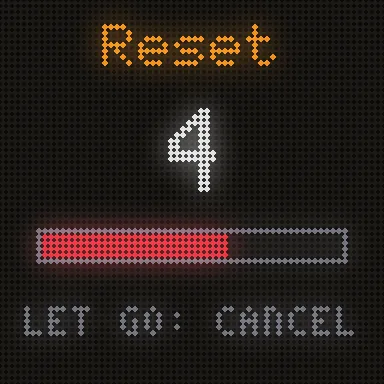
Afterwards, set hako up again as in Setup.
Stuck, or something not working? Email hello@hakoshop.com. The settings page's Help tab has a button that fills in your hako's details for you. Regulatory information is on the compliance page.
第一弾
25 nummerierte Geräte der Founder Edition, danach eine größere Serie auf Kickstarter. Trag deine E-Mail ein, und ich schreibe dir, wenn die Vorbestellung öffnet und wenn die Kickstarter-Kampagne startet. Sonst nichts, außer du möchtest das Devlog.